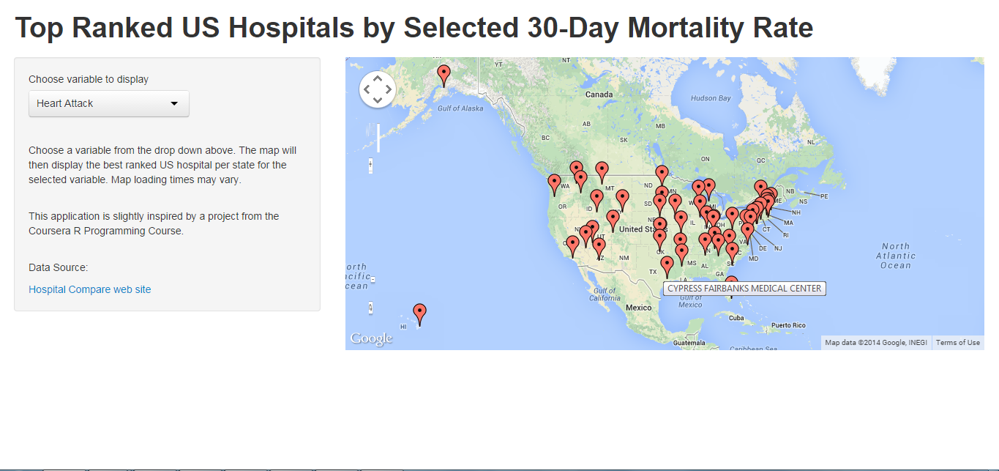

Overview
This application uses a Google Visualization Geochart to provide an interactive map displaying the locations and names of the best ranked US Hospitals by state based on 30-day mortality rates of:
- Heart attack
- Heart failure
- Pneumonia
Ray Pacheco
September 2014 Developing Data Products
This application uses a Google Visualization Geochart to provide an interactive map displaying the locations and names of the best ranked US Hospitals by state based on 30-day mortality rates of:
The application is partially based upon a programming assignment from R Programming, the second course in the Coursera Data Science Specialization.
The function (rankall) returned the nth ranked hospital per state for the three different 30-day mortality rates. This application capitalizes on the data produced for the 1st ranked hospital per state for all three variables.
The original data used can be found at the Medicare Hospital Comparison Website.
The application uses the googleVis package to render the geomap.
The user is allowed to select one of the three variable rates (heart attack, heart failure, pneumonia) from a dropdown menu.
In order to meet the assignment deadline, the data used was preprocessed into a csv file for each rate. Each file contains the name of the hospital name, address and rate for that particular variable.
The shiny app calls the file to be used based on which variable the user selects.
When the selection is made the geomap is generated with each hospital name pinned at its geographical location.

As previously stated the application merely calls one of three files and maps the address and name of the hospital for the 30-day mortality rate selected. Future versions of this application should give users more customization in the data they can select.
Potential expansions examples: